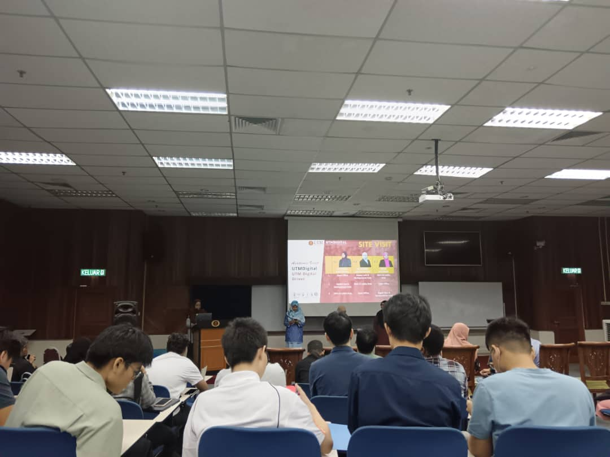
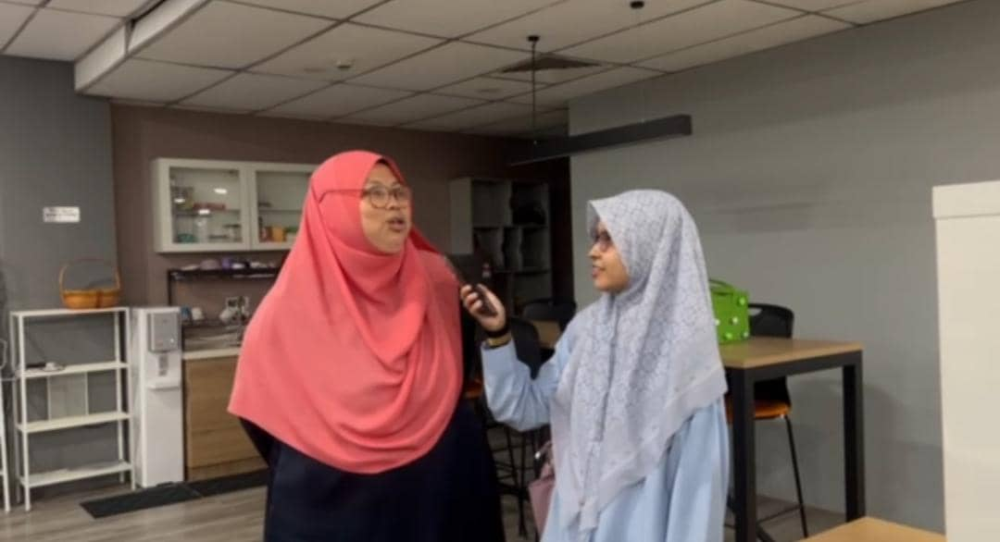

This talk was an insightful session where professionals discussed various topics related to UTM Digital. We got 3 talkers that give us the exposure about job scope her in UTM Digital. This give me thrilling feelings to know more about their job and what actually they do.
UTM Digital Visit
Click here to experience my visition
UTM Digital
On 17th December 2024, we got an assignment from our lecturer to go visit UTM Digital. This visit is conducted, so that we got real life exposure on work field of Computer Science section. This visit include talk given by 4 workers here of different unit. After that, we got tour on their workspace, where we visit their office and meeting room. We also get to experience some new technologies that we don't usualy see on our campus. Wee also get to interview some of the employees here about their work. Here are some images that I capture myself from this visit.


This is our interview with the head department of Education Section , Pn. Azilawati Binti Arbaai
Vlog Video!
Please like and subscribe to our vlog about our visit here in UTM Digital!
My Reflection
From this visit, I got to enlarge my understanding on job scope of UTM Digital and also experience it real life in front of my eyes. This really give me spirit to continue sharpens my coding skills and ace my education here, in UTM. I also got to learn more about variaty of job that suit my education level. Overall, this visit really oped my eyes on how I see things and also build up determination to study hard.